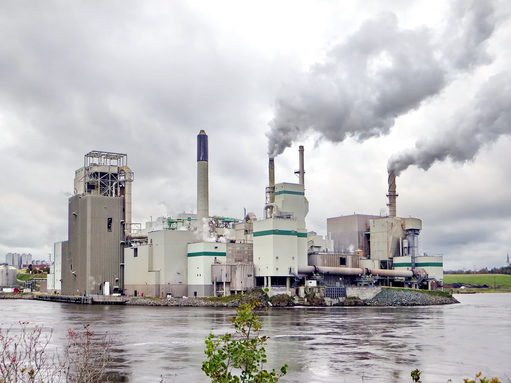

소개
화학과에너지소재글로벌 리딩 컴퍼니포스코케미칼
포스코 케미칼은
화학과 소재 분야에서 시장을 선도하는 제품과서비스로 고객 가치를 만들어 나가고 있습니다.
1971년 포항축로 주식회사로 출발한지난 50여년간 국내 최고의 내화물 및 축로전문 회사로 안정적인 성장을 이어왔습니다.
이어 기초 산업소재 분야에서의 기술과 풍부한 경험, 독창적인 노하우를 바탕으로 새로운 도전을 계속하고 있습니다.
포스코의 포항과 광양제철소에 국내 최대 규모의 생석회를 공급하고, 콜타르와 조경유 등생산 기반이 되는 석탄화학 산업에 진출했습니다.
인도네시아와 중국에서도 고성장이 기대되는 글로벌 사업 네트워크를 구축했습니다.
케미칼 비전
포스코 케미칼은 ‘화학’을 넘어 ‘과학’을 기반으로 고객에게 새로운 가치를 제공하는 세계적 기업이 되겠습니다.
포스코 케미칼은
포스코 케미칼은 1963년 창립 이래 끊임없는 도전과 혁신으로
지속적인 성장을 거듭해온대한민국 대표 화학기업입니다.
포스코 케미칼은 고객과 인류의 풍요로운 삶을 위해지난 70여년간 꿈을 현실로 만들어왔습니다.
이제포 코스코 케미칼은 글로벌 경쟁력을 갖춘 석유화학, 첨단소재, 생명과학 사업
전문 자회사 등
균형있는 사업 포트폴리오를 바탕으로 'Global Top 5 화학회사'로 다시 한번 도약코자 합니다.
연혁
포스코 케미칼은 1963년 내화물 제조회사로 설립된 삼화화성과 1971년 내화물 축로작업을 위해서 설립된
포항축로가 합병한 회사로, 포스코의 내화물 및 화학소재로 전문적으로 시작한 회사 입니다.
1963 ~ 1993
내화물의 새로운 시작
- 1963
- 01 삼화화성 주식회사 설립
- 1971
- 05 포항축로 주식회사 설립
- 1973
- 05 POSCO 로 보수 협력업체 지정
- 1974
- 02 마그네시아클린커 포항공장 준공
- 1983
- 09 전자동 부정형공장 준공
- 12 기술연구소 설립
- 1987
- 03 포항로공업 주식회사 상호변경
- 1983
- 04 거양로공업 주식회사 상호변경
1994 ~ 2008
코스닥 상장
- 1994
- 12 포철로재 주식회사 상호변경 삼화화성 주식회사 설립
- 2001
- 04 주식회사 포스렉으로 상호변경
- 10 코스닥 상장
- 2003
- 07 윤리규범 선포 시행
- 2004
- 07 나누미 봉사 창단
- 2006
- 07 안전보건경영 시스템(KOSHA) 인증
- 2008
- 03 포항제철소 석회소설비 운영
- 11 광양제철소 석회소성설비 운영
2009 ~ 현재
세계 1위 회사로 도약
- 2010
- 03 주식회사 포스코켐텍으로 변경
- 08 음극재 사업부문 인수
- 12 10년도 고용 창출 100대 우수기업 선정
- 2011
- 11 2차전지 음극재 생산공장 준공
- 12 품질경영시스템(ISO)
- 2012
- 01 인니 생석회사업 자회사 설립
- 10 안전보건경영시스템(OHSAS) 인증
- 2013
- 02 인니 화성춤사업 자회사 설립
- 07 영구포항상무유한공사 설립
- 2014
- 11 동반성장 성과공유부문 산업통상자원부 장관 표창
- 2016
- 07 음극재공장 4호기준공
- 2017
- 06 제9회 코스닥대상 ‘최우수테크노기업상’ 수상
- 10 한국에너지공단 인증 ‘에너지 챔피언’ 선정
- 2018
- 12 창사 최대 매출 1조2826억 달성
- 2019
- 03 주식회사 포스코 케미칼로 사명 변경
- 04 포스코ESM 합병으로 에너지소재사업 통합
- 07 유가증권 코스피 이전 상장
- 2020
- 04 양극재 광양공장 2단계 준공
- 08 인조흑연 음극재 동장 착공
- 11 피앤오케미칼 설립 (과산화수소 자회사)